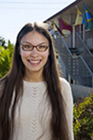

Rachel Zubiate
Co-CEO, Spanish Program Manager
Rachel is from Phoenix, Arizona and has a B.A. in English with a concentration in Linguistics and a BA in Russian from Arizona State University. She has traveled to Kazan, Russia, and Kyiv, Ukraine, for language study. She collects children's books in other languages.

Jia Kang
Co-CEO, Korean Program Manager
Jia Kang grew up in Baltimore, Maryland and got a B.A. in English and Cultural Anthropology with a Film/Video/Digital Certificate from Duke University. She spent 4 years in Korea teaching English, studying Korean, and working as a writer and editor at an English textbook publishing company for elementary students. She loves to travel and is a foodie at heart.
Yingdi Qi
Co-CEO, Chinese Program Manager
Yingdi is from Jinan, China. She is a big fan of languages and technology. She holds a B.A. in English Language and Literature and Cross-cultural Communication. She is passionate about helping an organization to adapt its service and product so that it will reach more people in different cultural background and thereby influence their life.
Olga Melnikova
Co-CEO, Russian Program Manager
Olga is from Kaluga, Russia and holds 2 BA-s (one in Teaching French and English and another one in Creative Writing and Literature). She was a translator from English and French to Russian for seven years before switching to localization and project management. She also worked as a French-Russian court interpreter for 2 years. Plays the guitar and sings the songs she composes, spends at least 1 month per year in Europe (mainly France), volunteers for various Russian charities.